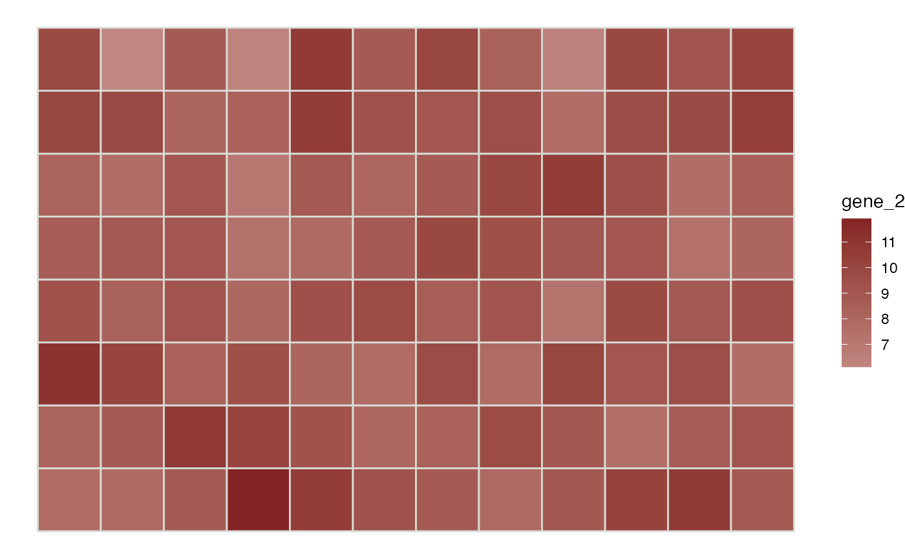

Plot spatial gene expression.
featurePlot( sce, feature, assay.type = "logcounts", diverging = FALSE, low = NULL, high = NULL, mid = NULL, color = NULL, platform = NULL, is.enhanced = NULL, ... )
| sce | SingleCellExperiment. If |
|---|---|
| feature | Feature vector used to color each spot. May be the name of a
gene/row in an assay of |
| assay.type | String indicating which assay in |
| diverging | If true, use a diverging color gradient in
|
| low, mid, high | Optional hex codes for low, mid, and high values of the color gradient used for continuous spot values. |
| color | Optional hex code to set color of borders around spots. Set to
|
| platform | Spatial sequencing platform. If "Visium", the hex spot layout
will be used, otherwise square spots will be plotted. |
| is.enhanced | True if |
| ... | Additional arguments for |
Returns a ggplot object.
Other spatial plotting functions:
clusterPlot()
